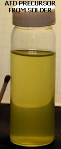

Most Tin Oxide coatings on Ti have been achieved via SnCl4 (Stannic Chloride) which is somewhat difficult to
obtain.
The following scheme works well and uses Stannous Chloride which can easily be made from Tin metal and HCl or purchased. Tin/Antimony solder dissolved in HCl + H202 will also do for the starting metal.
It is taken from J. Material Sci. Technol., 2010, 26(2), 187-192.
"Active Stainless Steel/SnO2-CeO2 Anodes for Pollutants Oxidation Prepared by Thermal Decomposition."
The procedure requires a reflux apparatus which need not be very elaborate. A Tin Alkoxide (also known as an Alcoholate) is formed when the metal compounds are refluxed with the Alcohol. The procedure from the article is as follows:
The precursor solution of SnO2-CeO2 was prepared by dissolving 4.52g SnCl2:2H2O and
0.09g CeCl3:7H2O in 50ml Ethyl alcohol. Firstly, the solution was stirred at room temperature
for 30 min. Secondly, the solution was heated and refluxed at 80°C for 5 h. And then, after
sealing at room temperature for 24 h, the precursor solution was finally formed, which was
light yellow and transparent.
Antimony (and perhaps other compounds) can be substituted for the Ce dopant.
Detailed description
2.5 grams SnCl2:2H20 was dissolved in 15ml distilled Methylated spirits.
0.52g of a liquid containing 31.8% Sb was added. (The Sb was added in the form of a solution of Antimony Chloride which was made as described elsewhere on this site.)
The solution turned slightly milky due to the presence of water. (It went clear when reflux started.)
The solution was then stirred for approx. half an hour at room temperature and then refluxed for 5 hours. At the end of reflux the solution was slightly cloudy.
The solution was put into a stoppered bottle and let sit 24 hours. At this stage it was very slightly yellow and slightly cloudy. The ratio of Sn/Sb is 0.89/0.11 (11% Sb).
A piece of Grade 1 Ti that had been etched for approx. 2 hours in 20% HCl at 90°C was washed in distilled water and dried with a heat gun. It is important to keep the Ti very clean at this stage. Do not let run-off from the top of the Anode (the unetched part) run down onto the etched part.
The Ti was then liberally brushed with the solution and let drip dry for 5 minutes.
The Ti was then shaken to remove excess solution and dried using the heat gun. The Ti was kept moving while the drying was taking place so that puddles of solution did not form on any areas of the Ti.
This solution application and drying procedure was carried out twice more and the Ti was then baked in an oven at 480°C for approx. 7 minutes.
The Ti received three more coats of solution + bake and then three more coats of solution + bake (9 coats and three bakes total).
The Titanium was a deep blue colour when finished.
It was placed into a Chlorate cell and was still running OK after 10 days with 3.6 Volts across the cell at an Anode current density of approx. 70mA per square cm.
The Methylated spirits was distilled using a fractionating column. The first 10% of distillate and the last 5% (still in boiling flask) was discarded.
Distilled Vodka (94% Ethanol + 6% water) was also used as the solvent instead of distilled Methylated spirits. When the Antimony liquid was added the solution went very cloudy with a large precipitation of white Antimony Oxide. The solution was refluxed and most of the cloudiness disappeared. This solution formed a coating of Tin Oxide but this coating failed after a few hours of testing. The presence of water was blamed for this failure. Anhydrous Ethanol is probably best if you can obtain it. It is probably best to dry the distilled Methylated spirits if you suspect it contains any water though a small amount appears to be tolerable. There is some water in the SnCl2:2H2O after all.
|
ATO via Tin/Antimony solder, HCl and H2O2

This is more or less a repeat of above with the Chlorides coming from solder.
Tin/Antimony solder can be had OTC in some places so it was decided to attempt an ATO coating using 95% Tin + 5% Antimony solder. First a small amount of the solder was made from Sn and Sb. If purchasing solder the contained flux (if present) may have to be removed by heating the solder and burning it off.
3.25 grams Tin and 0.17 grams Antimony were melted together and mixed in an Iron thimble. The still molten contents were emptied out onto
a piece of glass so as to form a thin sheet. This was cut into a number of small pieces and added to 30 ml (about half this amount would probably suffice) of 20% HCl and refluxed in a round bottomed flask with stirring. After approx. 45 minutes all the Tin had dissolved leaving the Sb as a fine powder. Two ml
of 35% Hydrogen Peroxide was added drop wise (careful) and the Antimony reacted within a few seconds. A clear solution (very small amount of cloudiness) resulted. The solution was heated on an oil bath at 150°c with stirring until there was just a very small pool of liquid (approx. 2 cc) left at the bottom of the flask. As HCl was coming off ventilation was needed. Some solid Chlorides deposited on the sides of the round bottom flask. It may be helpful to attach some vacuum to the flask to speed things up. The small amount of liquid solidified when the flask cooled down and when dissolved in 30ml of solvent it was found that the weigh of the Chlorides (solidified contents of flask) was 6.8 grams. A further 38ml of distilled Methylated spirits (68ml total) was added to the Chlorides in the flask and stirred at room temperature for half an hour. The solution was then refluxed for 5 hours and then let stand for 24 hours in a stoppered bottle (ie. same procedure as above using purchased SnCl2 and Antimony Chloride).
An attempt to use 12% HCl for reacting with the solder was first made but a large amount of Oxides formed. The water content was probably too high. 20% HCl or greater is needed. Anhydrous Ethanol would probably be better than the distilled Methylated spirits if you can get it. 190% proof Ethanol is NOT OK. The Methylated spirits was distilled using a fractionating column. The first 10% of distillate and the last 5% (still in boiling flask) was discarded.
The ATO precursor solution now had a slightly yellow colour.
A piece of Ti was etched in 20% HCl for approx. one hour at 90°C , washed in distilled water and dried using a heat gun. Keep the Ti very clean. The Ti was painted liberally with the solution and let drip dry for 5 minutes. The Anode was then given a good shake and dried using the heat gun. The Ti was kept moving when drying so that no puddles of precursor were formed on the Ti. This was repeated twice more and the Anode then baked at 480°C for about 8 minutes. The Anode then received two more bakes with 3 coats per bake. (Total of 9 coats and 3 bakes).
The Anode did not passivate when used to electrolyze NaCl solution. The Voltage across the cell when the Anode was placed into the cell for the first time was low at 3.2 Volts. This is always a good sign of a successful ATO coat on Ti. The Anode continued to operate with a low Voltage across the cell for approx. 15 days (it would have lasted longer if continued). The cell was then shut down.
This precursor solution was OK to use 10 months after solution preparation as successful Anodes were made using it after this time lapse. The solution was stored in a well stoppered plastic bottle.
|